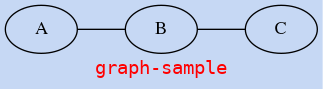
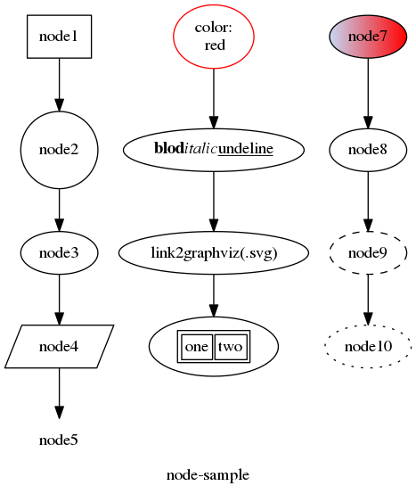
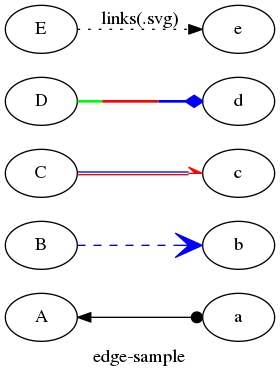

dot 笔记¶
其实graphviz是围绕着"面-点-线"来组织的.
面:¶
<graph|digraph> {
graph [label="",fontname="",fontsize="",bgcolor="",center];
}
graph或者digraph表示生成的图是无向图还是有向图,附带一系列属性.
面(graph)的基本属性:
- label为当前图形的名称--
label="XX图" rankdir=TB|LR|RL|BT表示图的走向,上下还是左右,或者相反fontname=""设置字体名fontsize=""设置字体大小fontcolor=""设置字体颜色bgcolor=""设置图形背景颜色center该值为真,则图形会居中绘制
code-sample:
graph {
graph [label="graph-sample",
rankdir=LR;
fontname="monospace",
fontsize=14,
fontcolor="red",
bgcolor="#c6d8f4"
center=1]
A -- B -- C;
}

点¶
<graph|digraph> {
graph [label="",fontname="",fontsize="",bgcolor="",center];
node1 [label="",color="",style="",fontcolor="",fontsize="",shape="",];
node2 [];
node3 [];
}
node1,node2,node3为创建节点名称,也可用其他字符串代替,每个节点都可以使用一些列属性修饰.
节点(node)基本属性:
- label就是节点展示的内容
- 一般使用双引号
label="节点名称" - label内支持
\n换行--label="节点名称: \n节点" - label内支持html语法,但是需用尖括号包裹--`label=<加粗;斜体;下划线>
""包裹的label下可以使用\n换行,\写多行内容;<>包裹的label无需使用\n 和 \
- 一般使用双引号
- 如果没有对节点指定label,则节点名就是lable--
A -> B,就是A到B的连线 - shape就是该节点的形状,更多
shape="box"就是矩形shape="circle"就是圆shape="ellipse"就是椭圆shape="polygon",sides=4,skew=0.4就是平行四边形,另有侧面长度,倾斜角度属性shape="none"就是无边框
- color就是边框的颜色,更多
- style节点类型
style="filled", fillcolor=""就是填充节点区域,多一个fillcolor属性fillcolor="red:blue"会产生背景颜色渐变的效果,关于渐变角度,文档中有描述style="rounded"就是圆角矩形style="solid"就是实线style="dashed"就是虚线style="dotted"就是虚点线
- URL节点属性,当文件保存为".svg"格式,使用浏览器打开时有效
URL="./index.html"会连接到此目录下相对文件URL="http://www.graphviz.org/pdf/dotguide.pdf"会链接到网站页面
code-sample
digraph {
graph [label="node-sample"];
/*shape attribute*/
node1 [shape=box];
node2 [shape=circle];
node3 [shape=ellipse];
node4 [shape=polygon,sides=4,skew=0.4];
node5 [shape=none];
node1 -> node2 -> node3 -> node4 -> node5;
/*color & \n & html tag*/
node6 [label="color:\n red",color=red];
node11 [label=<<b>blod</b>
<i>italic</i>
<u>undeline</u>>];
node12 [label="link2graphviz(.svg)",URL="http://www.graphviz.org/"];
node13 [label=<
<table>
<tr>
<td>one</td>
<td>two</td>
</tr>
</table>>]
node6 -> node11 -> node12 -> node13;
/*style*/
node7 [style="filled",fillcolor="#c6d8f4"];
node8 [style="solid"];
node9 [style="dashed"];
node10 [style="dotted"];
node7 -> node8 -> node9 -> node10;
}

线¶
<graph|digraph> {
graph [label="",fontname="",fontsize="",bgcolor="",center];
node1 [label="",shape="",];
node2 [];
node3 [];
node1 --|-> node2 [label=""];
node2 --|-> node3 [label=""];
node3 --|-> node1 [label=""];
}
"--"和"->"表示两种连线--无向线和有向线,这些线将各个节点之间连接起来,同时在每个连接线后,我们可以有一系列修饰线的属性.
线(edge)的基本属性:
- label就是线的说明--
label="yes/no" - style就是连接线的类型
style="solid"就是实线style="dashed"就是虚线style="dotted"就是虚点线style="bold"就是加粗线
arrowxxx有向图箭头的一些属性,更多dir="both"双向箭头arrowsize=2.0箭头大小arrowhead="open"带倒沟箭头arrowhead="halfopen"单边倒沟箭头arrowhead="diamond|odiamond|ediamond"菱形,空心菱形arrowhead="dot"圆点
- color就是连接线的颜色
color="blue"普通色color="red:blue"双色color="green:red;0.4:blue"分段
- URL线属性,当文件保存为".svg"格式,使用浏览器打开时有效
URL="./index.html"会连接到此目录下相对文件URL="http://www.graphviz.org/pdf/dotguide.pdf"会链接到网站页面
edge-sample:
digraph {
graph [rankdir=LR,label="edge-sample"];
A -> a [style=solid,dir=both,arrowhead=dot];
B -> b [style=dashed,arrowsize=2.0,arrowhead=open,color=blue];
C -> c [arrowhead=halfopen,color="red:blue"];
D -> d [style=bold,arrowhead=diamond,color="green:red;0.5:blue"];
E -> e [style=dotted,label="links(.svg)",URL="https://douban.fm"];
}

链接¶
终端输出命令¶
dot -Tv -Kv -O example.dot
-Tv表示希望生成的格式，默认png-Kv表示使用的构造器，默认dot-O"“大写的英文字母o”表示自动生成以dot文件名命名的图片example.dot.png-ofile“小写的英文字母o”，表示生成以“file”命名的文件
vim 插件¶
repo：https://github.com/wannesm/wmgraphviz.vim
命令：
:GraphvizInteractive => 一边编辑一边预览 :GraphvizShow => 预览